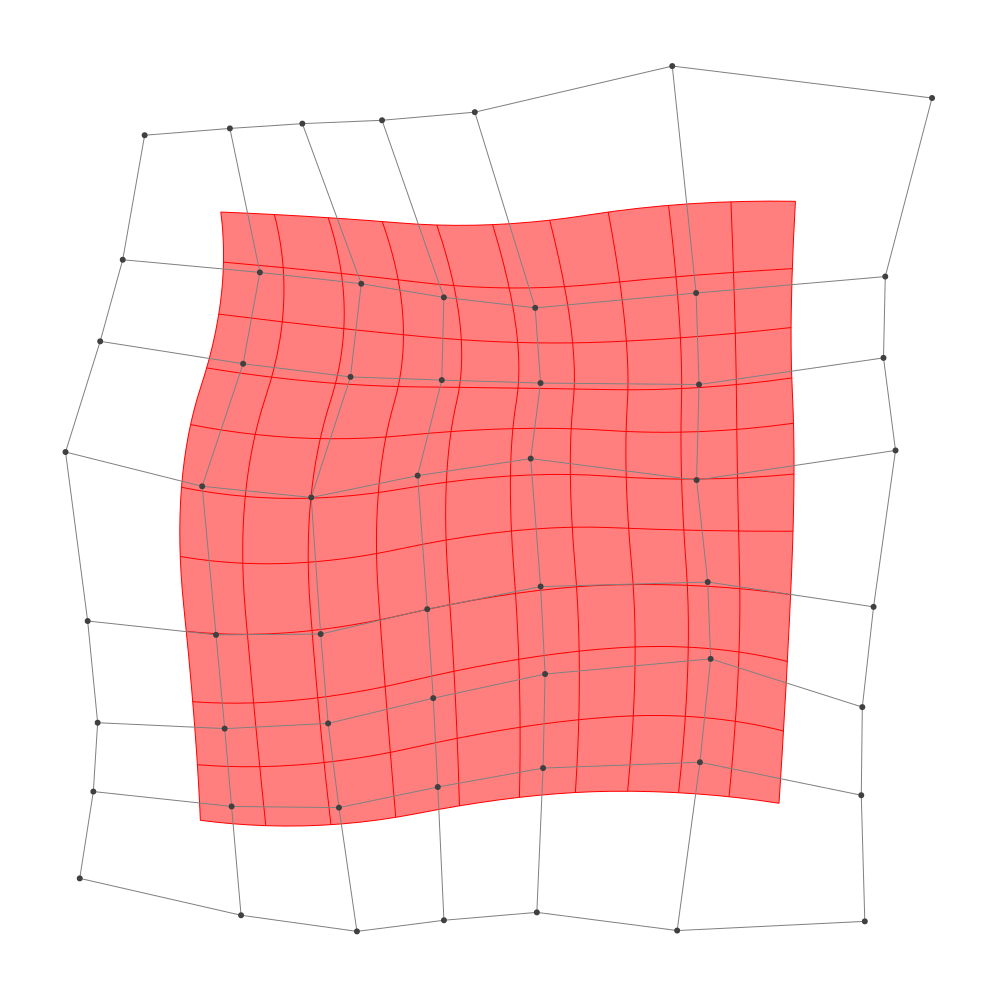

Refinement
BasicBSpline.refinement — FunctionRefinement of B-spline manifold with given B-spline spaces.
julia> p = 2 # degree of polynomial2julia> k = KnotVector(1:8) # knot vectorKnotVector([1, 2, 3, 4, 5, 6, 7, 8])julia> P = BSplineSpace{p}(k) # B-spline spaceBSplineSpace{2, Int64}(KnotVector([1, 2, 3, 4, 5, 6, 7, 8]))julia> rand_a = [SVector(rand(), rand()) for i in 1:dim(P), j in 1:dim(P)]5×5 Matrix{StaticArrays.SVector{2, Float64}}: [0.925407, 0.644672] [0.631588, 0.480994] … [0.507858, 0.675617] [0.330027, 0.820268] [0.423782, 0.70742] [0.446684, 0.708197] [0.71495, 0.976477] [0.256269, 0.93143] [0.998331, 0.767908] [0.995821, 0.545601] [0.391032, 0.217784] [0.119353, 0.316764] [0.354005, 0.48888] [0.0465178, 0.00599709] [0.695527, 0.562961]julia> a = [SVector(2*i-6.5, 2*j-6.5) for i in 1:dim(P), j in 1:dim(P)] + rand_a # random5×5 Matrix{StaticArrays.SVector{2, Float64}}: [-3.57459, -3.85533] [-3.86841, -2.01901] … [-3.99214, 4.17562] [-2.16997, -3.67973] [-2.07622, -1.79258] [-2.05332, 4.2082] [0.21495, -3.52352] [-0.243731, -1.56857] [0.498331, 4.26791] [2.49582, -3.9544] [1.89103, -2.28222] [1.61935, 3.81676] [3.854, -4.01112] [3.54652, -2.494] [4.19553, 4.06296]julia> M = BSplineManifold(a,(P,P)) # Define B-spline manifoldBSplineManifold{2, (2, 2), StaticArrays.SVector{2, Float64}, Tuple{BSplineSpace{2, Int64}, BSplineSpace{2, Int64}}}((BSplineSpace{2, Int64}(KnotVector([1, 2, 3, 4, 5, 6, 7, 8])), BSplineSpace{2, Int64}(KnotVector([1, 2, 3, 4, 5, 6, 7, 8]))), StaticArrays.SVector{2, Float64}[[-3.5745926948256344, -3.8553280300249284] [-3.868412493476243, -2.0190063666434774] … [-3.927306508757246, 1.620544266870959] [-3.9921417736421425, 4.17561692908591]; [-2.1699732831226397, -3.6797321117077257] [-2.0762182417475117, -1.7925803292355296] … [-2.100634717156083, 1.9526209046781524] [-2.053315946232467, 4.208196697852314]; … ; [2.495821482167846, -3.9543986452027706] [1.8910316597940504, -2.2822157952812954] … [2.488868832344092, 2.1009688815788774] [1.6193534393545521, 3.816764263648136]; [3.8540045468343354, -4.011120441163046] [3.5465178032778724, -2.4940029127150267] … [3.631731161467445, 1.6071711359022802] [4.195527012371188, 4.062961045518518]])
h-refinemnet
Insert additional knots to knot vector.
julia> k₊=(KnotVector(3.3,4.2),KnotVector(3.8,3.2,5.3)) # additional knotvectors(KnotVector([3.3, 4.2]), KnotVector([3.2, 3.8, 5.3]))julia> M_h = refinement(M,k₊=k₊) # refinement of B-spline manifoldBSplineManifold{2, (2, 2), StaticArrays.SVector{2, Float64}, Tuple{BSplineSpace{2, Float64}, BSplineSpace{2, Float64}}}((BSplineSpace{2, Float64}(KnotVector([1.0, 2.0, 3.0, 3.3, 4.0, 4.2, 5.0, 6.0, 7.0, 8.0])), BSplineSpace{2, Float64}(KnotVector([1.0, 2.0, 3.0, 3.2, 3.8, 4.0, 5.0, 5.3, 6.0, 7.0, 8.0]))), StaticArrays.SVector{2, Float64}[[-3.5745926948256344, -3.8553280300249284] [-3.7508845740159997, -2.7535350319960576] … [-3.9370317984899805, 2.0038051662032017] [-3.9921417736421425, 4.17561692908591]; [-2.661590077218688, -3.741190683118747] [-2.686727768799016, -2.6195739386444856] … [-2.7387601154578944, 2.1904540360464004] [-2.731904985825854, 4.196793778784073]; … ; [2.495821482167846, -3.9543986452027706] [2.1329475887435683, -2.951088935249885] … [2.358441523395661, 2.358338188889266] [1.6193534393545521, 3.816764263648136]; [3.8540045468343354, -4.011120441163046] [3.6695125007004576, -3.100849924094234] … [3.716300539103006, 1.9755396223447157] [4.195527012371188, 4.062961045518518]])julia> save_png("2dim_h-refinement.png", M_h) # save image

Note that this shape and the last shape are identical.
p-refinemnet
Increase the polynomial degree of B-spline manifold.
julia> p₊=(1,2) # additional degrees(1, 2)julia> M_p = refinement(M,p₊=p₊) # refinement of B-spline manifoldBSplineManifold{2, (3, 4), StaticArrays.SVector{2, Float64}, Tuple{BSplineSpace{3, Int64}, BSplineSpace{4, Int64}}}((BSplineSpace{3, Int64}(KnotVector([1, 2, 3, 3, 4, 4, 5, 5, 6, 6, 7, 8])), BSplineSpace{4, Int64}(KnotVector([1, 2, 3, 3, 3, 4, 4, 4, 5, 5, 5, 6, 6, 6, 7, 8]))), StaticArrays.SVector{2, Float64}[[-3.3977954575367146, -3.3648637061645847] [-3.5124074535265413, -2.442467031216297] … [-3.6343969415529216, 2.302179502515863] [-3.6574684043446606, 3.5547577612032732]; [-2.396786709730429, -3.239328074104658] [-2.3822070923783434, -2.2999880261261225] … [-2.3979234078507274, 2.473647782880527] [-2.3836101920396287, 3.626393751887673]; … ; [2.5833754989695343, -3.5522676204438417] [2.305755844350747, -2.729098305605892] … [2.5216883407794857, 2.478451208131217] [2.2063732479424893, 3.398015109794761]; [3.5383813885500826, -3.6159263713296013] [3.35986276020374, -2.8444454969828037] … [3.5224817675106017, 2.272585132271315] [3.6849370893046993, 3.43881387645052]])julia> save_png("2dim_p-refinement.png", M_p) # save image

Note that this shape and the last shape are identical.